My Nova and FRS
My 1966 Chevy II Nova
This is a picture of me next to my Nova.
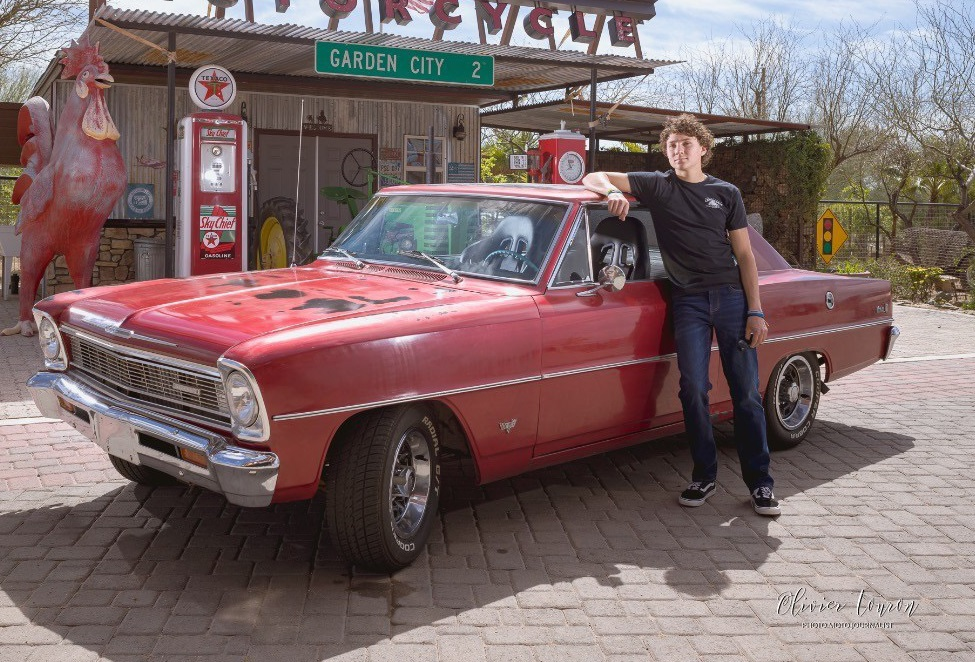The car was first bought in 1995 from the original owner. The color was a dark green and the interior was a disgusting yellow and lime green. My father drove it in high school a few times but never really fell in love with it. It then went to his younger brother, my uncle, and he painted it red. My uncle also never did fall in love with it and leftit out to rot in the New Mexico sun for 25 years. It was then given to me as my first project car back in 2021. Initially, just like my dad and uncle, I also did not care much for it. My opinion would soon change as I found the beauty that it held.
When me and my dad first began putting time into restoring it, I had very limited mechanic knowledge. My dad was very knowledgeable in machinery and he is currently a mechanical engineer, so he taught me everything that I know. The first thing that we attempted to accomplish after shipping the car from its previous home in New Mexico to its current home in Arizona was to get it running. We did this with surprisingly little effort despite the weathered nature of the car.
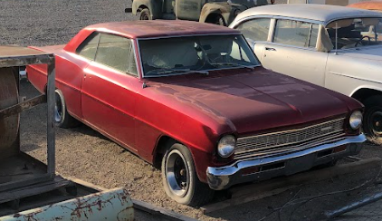With the most important part of the car taken care of, we could now begin working on the more interesting parts such as the interior. The old seat covers were torn, sun damaged, and an ugly color. My dad ordered some black seat covers and all new front seats, as well as new door panels and roof liner.
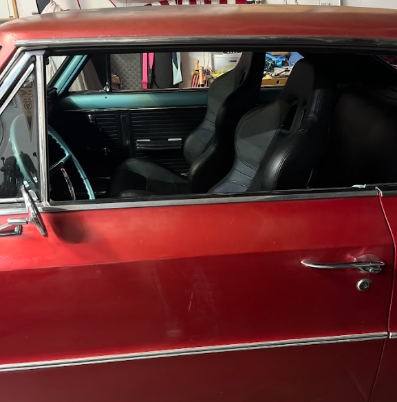This almost completely new interior gave the car a very different feel that I love. The blue accents of the dash and steering wheel add a bit of originality to the car that works well with the modern black.
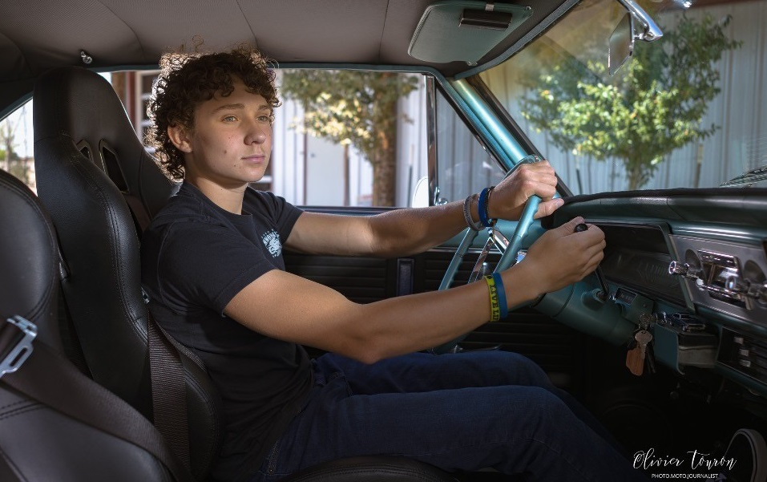The Next thing for us to change about the car was how it drives. The car came stock with a v8 283 cubic inch Chevy engine. This engine is cool because I can say I drive a v8 chevy, but combined with the 2 speed powerglide transmission, the car is not very fast. Despite sounding cool, the car could not do burnouts, and was very difficult to get to high speeds. To fix this, my dad had the idea of getting a larger intake manifold and carburetor. This would allow for more air to get into the engine in turn creating more horsepower.
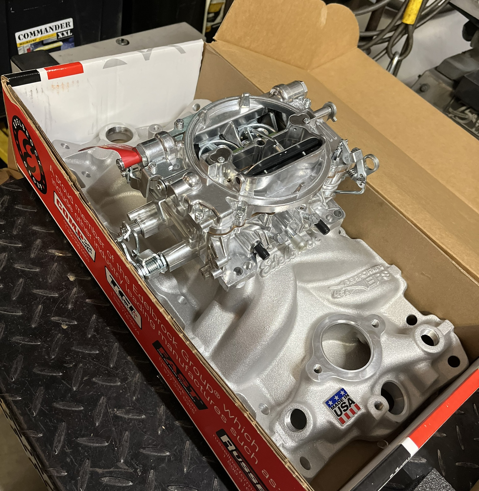The intake manifold that we got was an Edelbrock 4-barrel intake manifold and a 4-barrel carburetor. These new upgrades were initially difficult to install and tune, but the improvement in horsepower was well worth it. The car still does have some tuning issues due to us attempting to tune it ourselves, but the car will be very nice once it is tuned properly.
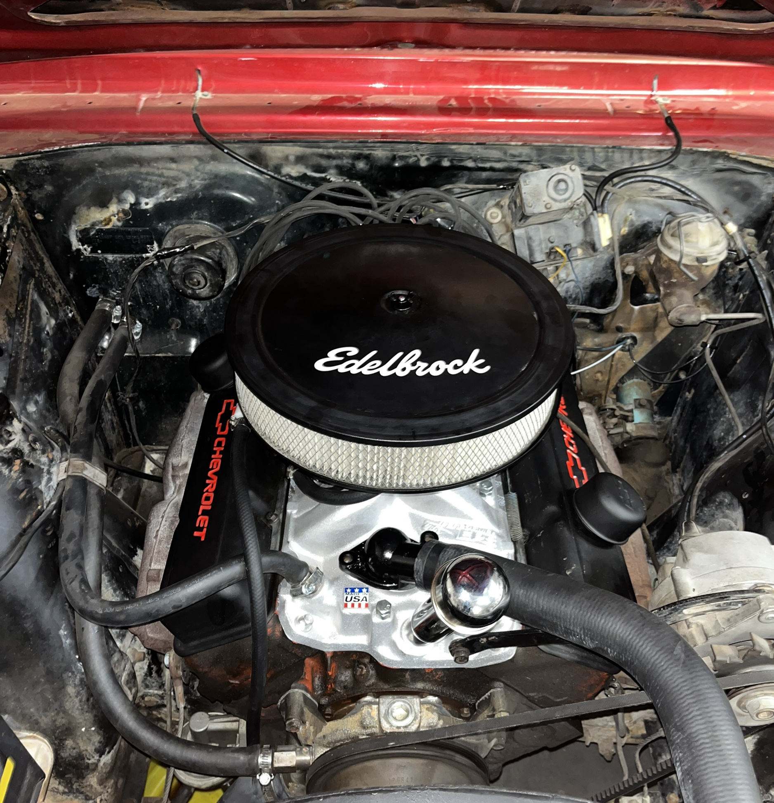The car remains in this state as of right now. I have many big plans for this car including a repaint, engine/transmission swap, and disk-brake conversion. Once I can get the money to pay for it, I will make the car drive and look beautiful.
My 2015 Scion FRS
This is a picture of me next to my FRS.
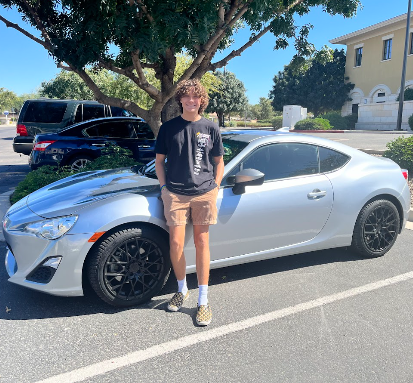This is the most recent vehicle that I have purchased. When going into college, I wanted to have a car that could reliably get me from my home to the Mesa Community College campus. Driving my nova every day would be an issue when there is a new problem every week. When looking for a car, I wanted to find one that was made pretty recently. I was mostly looking for a car that had been made in 2010 or later so that I could be safe while driving, and it would last me a long time. There were many different cars that I was looking for such as a Chevy Camaro, Nissan 350z, and Honda Civic Sport. I finally settled on my 2015 Scion FRS which I think was a good choice. I love this car and it is super fun to drive.
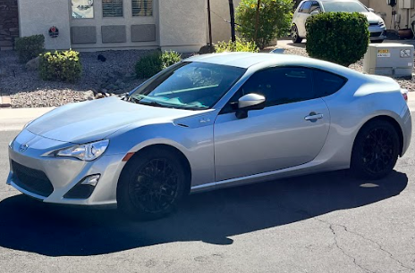Since only having the car since October of 2023, I have not had very many chances to make changes to the car from how I bought it. I did receive a few gifts for the holidays that I have installed onto my car. I got a new reverse light, some new interior accessories that add a red contrast to the black interior, and I got a carbon fiber wing that attaches to my trunk.
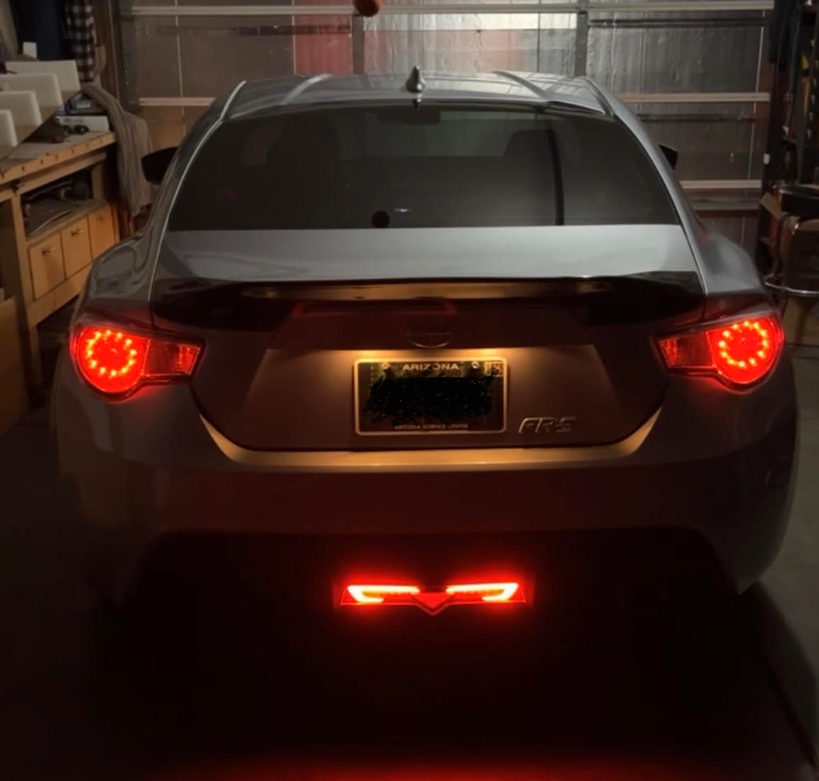 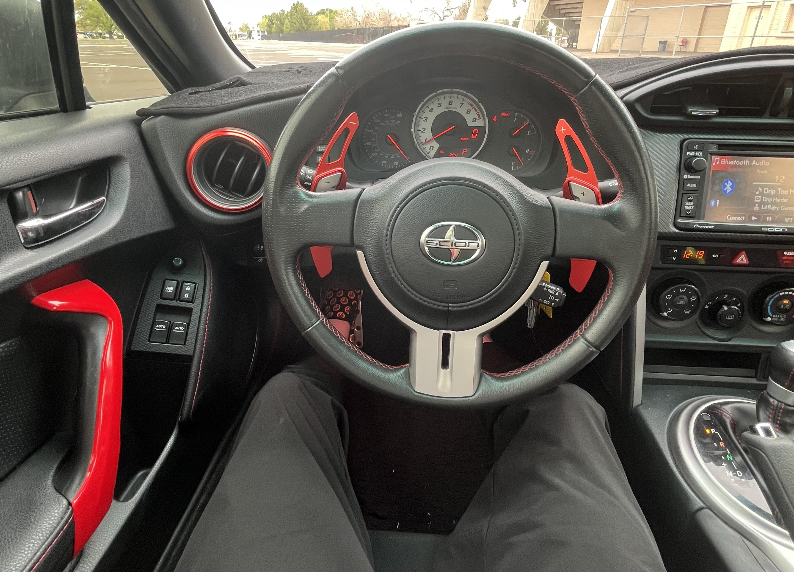I love this car and I will continue to do everything I can to improve it. I drive it almost every day to practice or to school and I enjoy every second of it. I have a long way to go with this car and I plan on keeping it for a while.
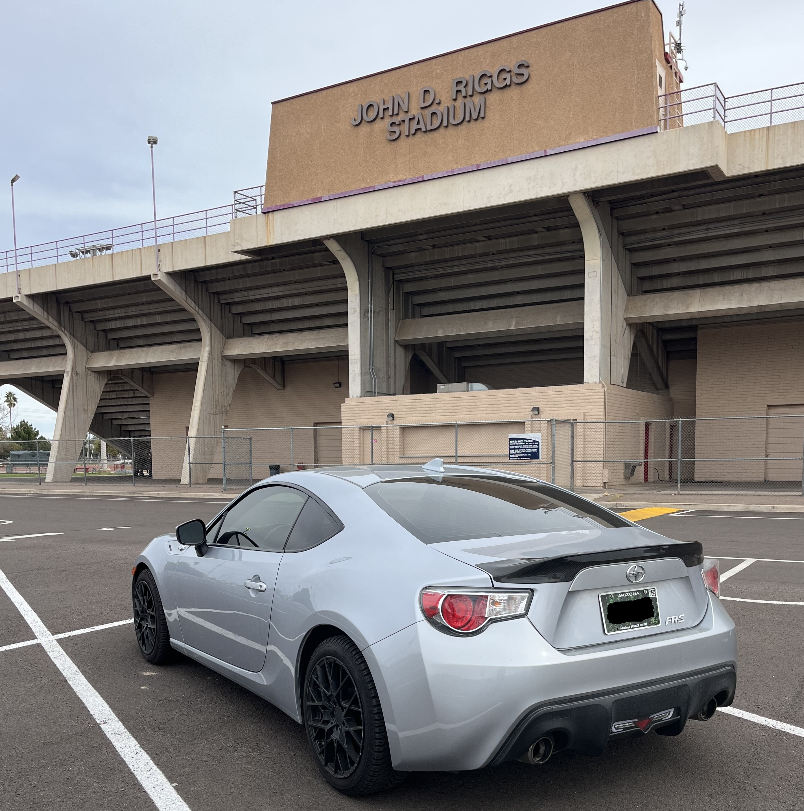